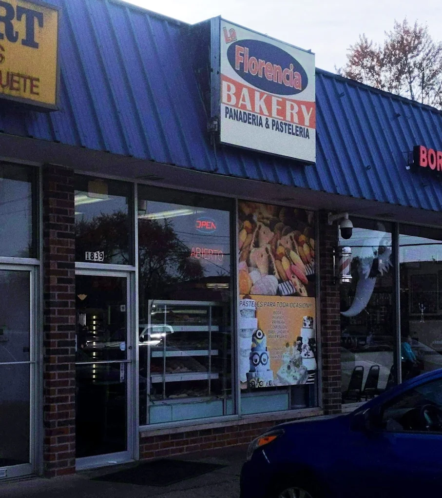
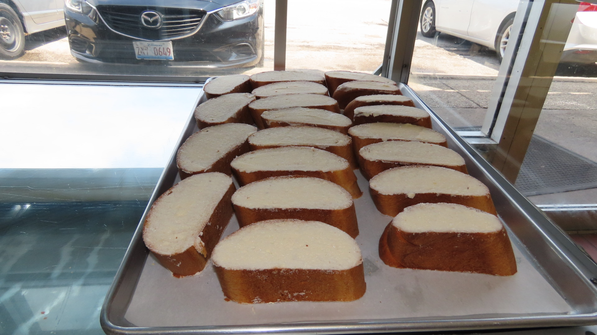
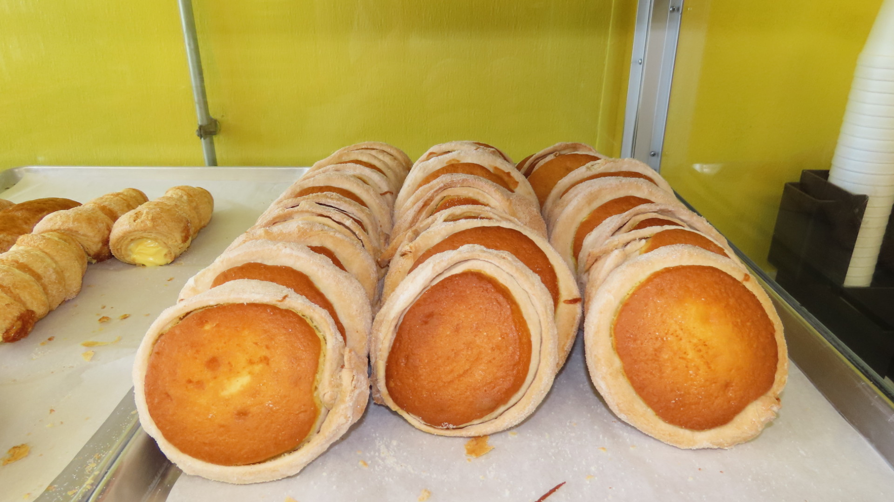
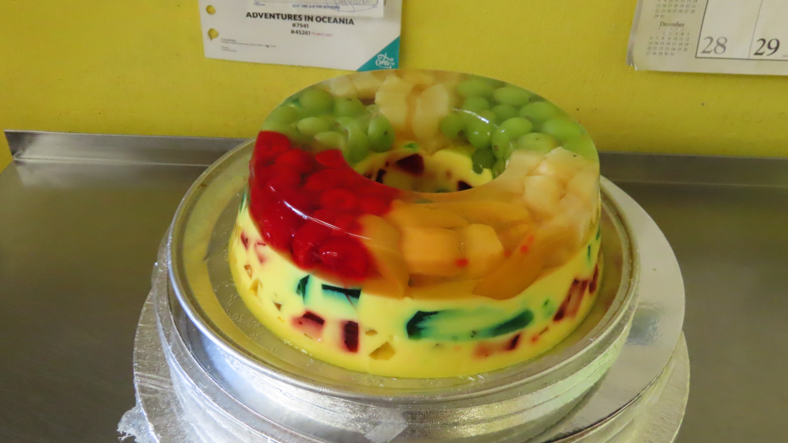
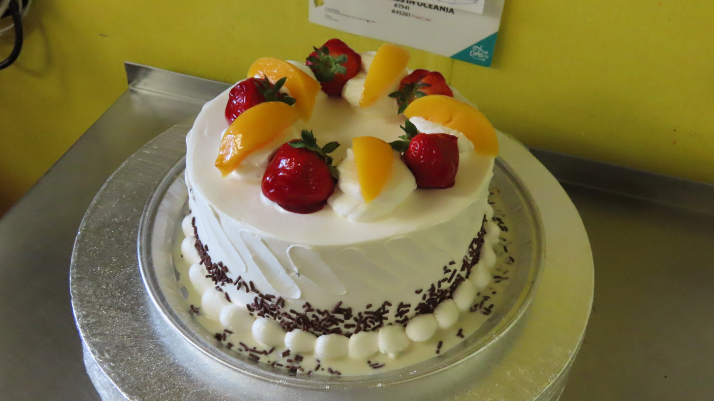
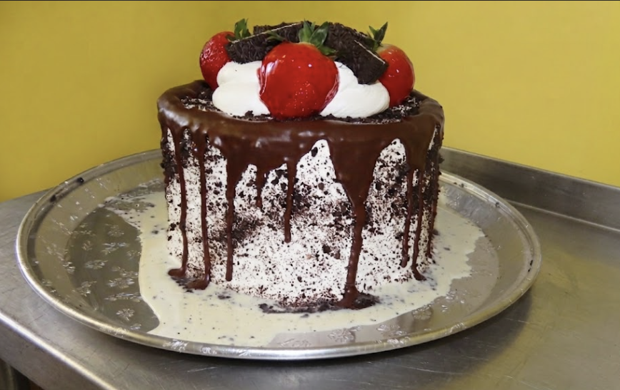

Traditional Savor in Mount Prospect
La Florencia Mount Prospect: Authentic Mexican tradition with fresh bread daily. Enjoy conchas, orejas, and crispy bolillos. Specializing in custom Tres Leches cakes for your celebrations. A family-friendly atmosphere where you'll feel right at home. Quality craft and authentic flavor in every bite!






1839 W Algonquin Rd, Mount Prospect, IL 60056
📞 (847) 258-4452| Monday | 7:00 AM – 9:00 PM |
| Tuesday | 7:00 AM – 9:00 PM |
| Wednesday | 7:00 AM – 9:00 PM |
| Thursday | 7:00 AM – 9:00 PM |
| Friday | 7:00 AM – 9:00 PM |
| Saturday | 7:00 AM – 9:00 PM |
| Sunday | 7:00 AM – 9:00 PM |